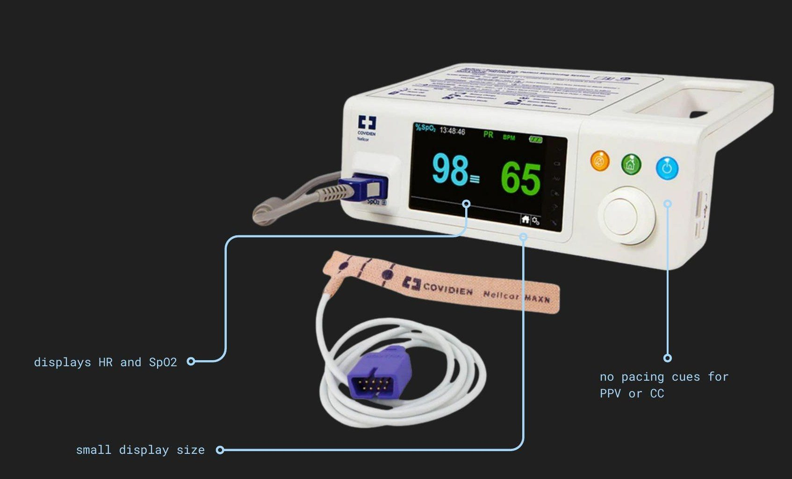
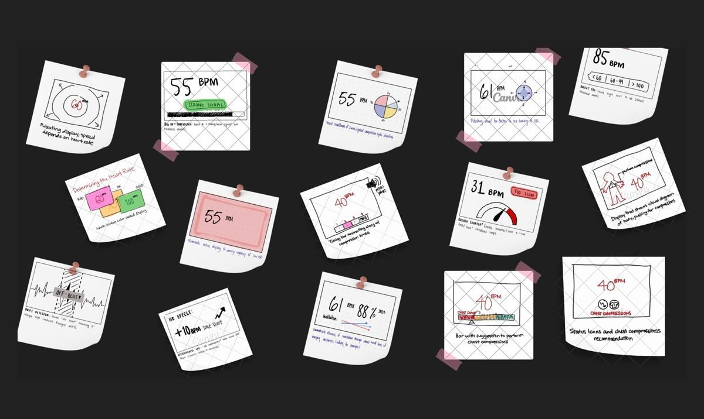
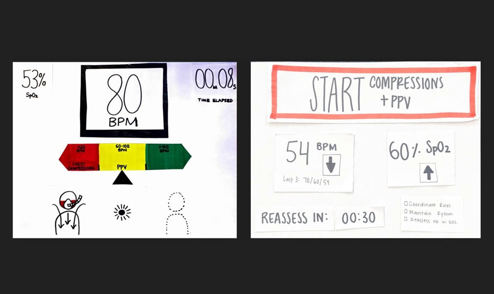
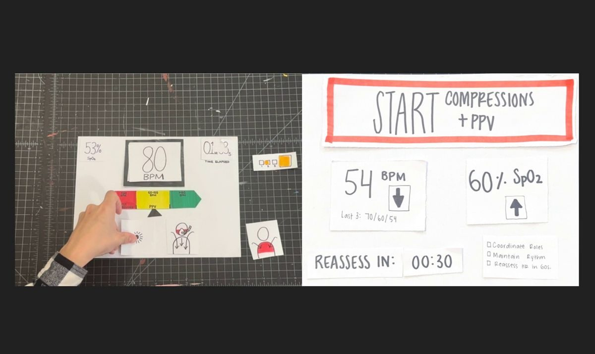
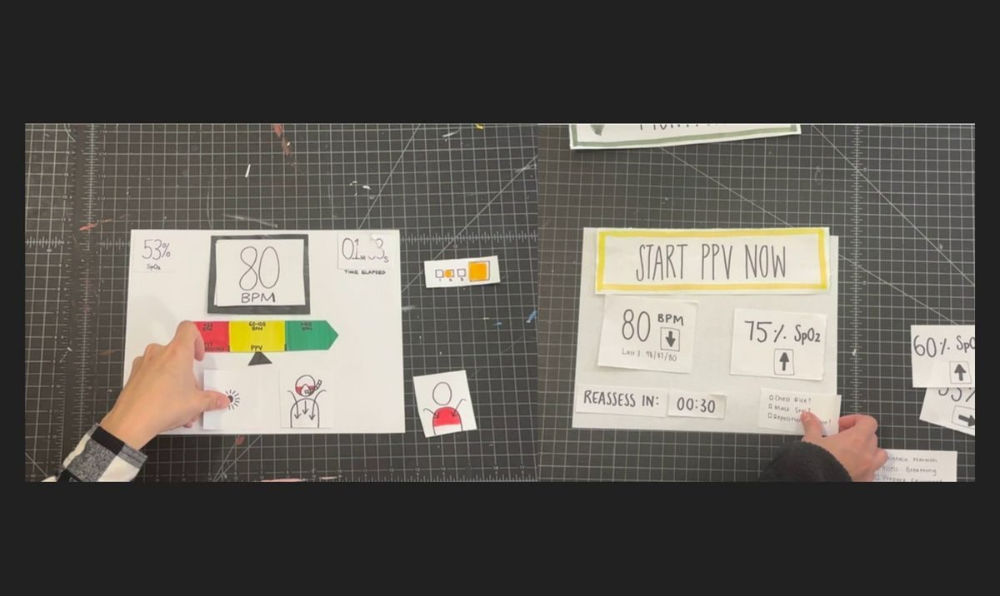
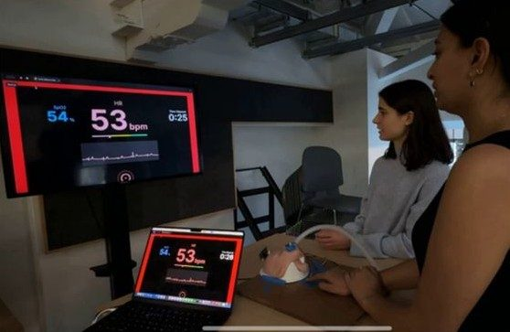
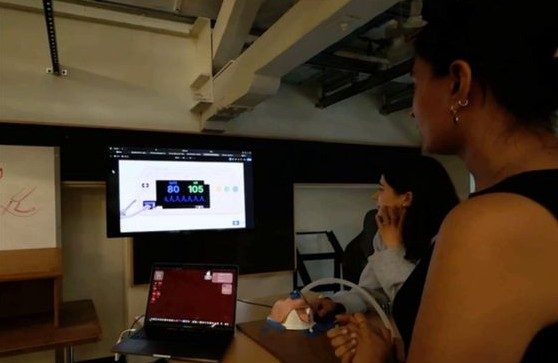
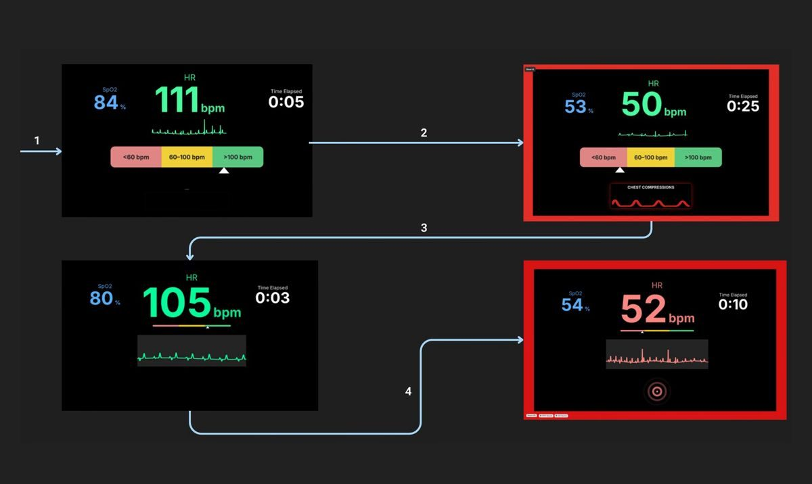
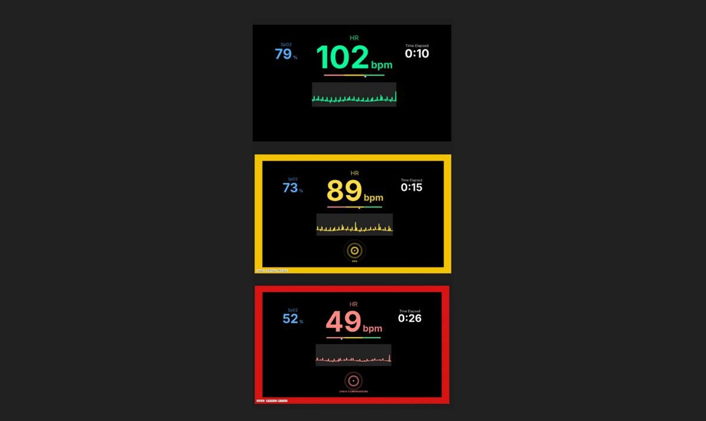

A redesigned monitor that gives clinicians direction, not just data, while a newborn’s life is on the line.

During neonatal resuscitation, clinicians make fast, high-stakes decisions from monitor data while performing procedures and coordinating as a team. Today’s monitors show heart rate and oxygen saturation (SpO2) on a small screen, with no pacing cues for ventilation (PPV) or chest compressions. That gap makes delayed or incorrect interventions more likely.
How might we design a monitor that supports fast perception, accurate timing and shared understanding across the team?

We split the work evenly as a team of three, so I worked on every stage.
Before designing a single screen, we broke resuscitation down into its five core tasks: determining heart rate, beginning ventilation, timing ventilation, starting compressions and timing compressions. For each one we mapped what the clinician needs to see, the decision rule they follow (for example, heart rate above 100, between 60 and 100, or below 60) and the errors most likely to happen, like misreading the monitor or losing rhythm.
That analysis shaped the hardware too: a 10 × 12 inch display mounted above the patient and the care team, within clear view of the team lead.
Clinicians move through resuscitation in phases, so the display does too. Instead of a fixed wall of numbers, it shows what matters for the step the team is on.
Heart rate zones (above 100, 60 to 100, below 60) appear explicitly on screen as color-coded states, so no one has to recall them under pressure.
The monitor turns raw readings into action, with prompts like “START COMPRESSIONS + PPV,” plus a reassessment timer and visual and audio pacing cues.
We sketched more than a dozen screen concepts on sticky notes, then combined the strongest features into paper prototypes we could swap live mid-test: color-coded heart rate zones, big numbers, action prompts and a reassessment timer.




We tested with classmates as stand-in users in a simulated resuscitation, using task-based scenarios, 7-point Likert ratings and NASA-TLX workload scores.


- Color coding read instantly, and testers praised it without prompting
- Heart rate zone identification was fast and accurate (7/7)
- The red-border alarm was noticed and acted on correctly
- PPV had no timing support at all, rated 1/7. This was our biggest usability gap
- The compression tempo had no label
- SpO2 had no target range, so values were hard to judge
- It still relied on clinician memory instead of explicit prompts
Workload scores told the same story: time pressure (80) and frustration (80) were high, even with low physical demand.


The final monitor uses three color-coded states the whole team can read from across the room: green (stable), yellow (watch) and red (act). Heart rate is the largest element, with SpO2 and time elapsed beside it and a live waveform below. In the red state, a pulsing compression cue paces chest compressions, and the border flashes so no one misses the change.
Testing showed us that clinicians don’t need more data, they need direction. Our first version looked clear, but it still asked people to rely on memory under pressure.
Test the final screens with NICU clinicians in a realistic simulation, and measure whether the pacing cues actually improve compression timing.
Minerva is curious about almost everything, and patient enough to learn it.